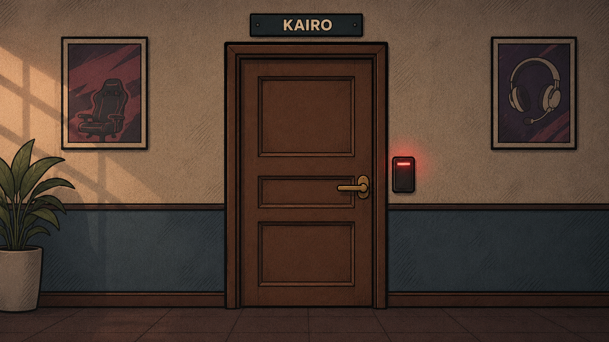

The Story
Prologue
On the morning of November 15, 2026, the organization is preparing for the world final at 6 p.m. Its leading player, Kairo, misses the 6 a.m. practice and does not answer his phone. He was last seen at 10 p.m. the previous night. At 11:41 p.m., the lock recorded his entry to the private suite. No exit was recorded.
You are the IT technician responsible for the network and access control at the gaming house. Security Control authorizes an inspection. Your maintenance badge allows entry through the bedroom, but does not replace the occupant’s internal permission. As soon as you enter, that missing permission triggers the lockdown, the suite’s containment protocol.
The main door closes behind you. The five internal rooms remain connected. There is another way out: a service exit in the corridor reached through the Server Room. You must reprogram the programmable lock on that exit by recovering a six-digit PIN from the clues.
You have five minutes. When the countdown ends, the main alarm sounds, security takes over and your investigation ends. Each invalid code or wrong wire brings the intervention ten seconds closer. Finding the exit resolves the lockdown; a careful investigation may change your understanding of the disappearance.

Timeline
- : Kairo is last seen in the hallway after practice.
- : the lock records entry to the private suite. No exit is recorded afterward.
- : Kairo misses practice. The team tries to contact him without success.
- : Security Control requests a technical inspection and preservation of the records.
- : your maintenance access activates containment. This is where the investigation begins. In the game, the countdown starts only after you finish or skip the introduction.
- : the scheduled start of the world final.
Characters
- Kairo
- A professional player and favorite for the world title. The organization closely monitors his routine, but access logs do not explain his decisions. Clues in the suite offer another perspective on his absence.
- You, the IT technician
- Responsible for the network and access control. You configured the lock the previous month and know the recovery procedure, but must collect the PIN fragments. Maintenance authorization is not the same as the occupant’s permission.
- Security Control
- Monitors the incident remotely and receives the containment alert. The response team takes over the suite when the countdown reaches zero. Until then, you can investigate and try to reprogram the exit.
The absence of an exit record does not prove that a person is still inside.
The setting draws on esports (opens in a new tab), but the characters, championship and events are fictional.
The protocol’s name
The title connects Kairo’s name with the idea of kairós, the right moment to act. This idea shapes the experience: observe before entering a code, connect information and choose what to investigate under pressure.
The countdown limits your investigation, but mistakes and discoveries also shape the ending. The same exit can lead to different conclusions about what happened in the suite.
As a learning aid, the binary calculator pauses the game countdown while open. Collapse it or close the PC panel to resume time. This pause is a gameplay rule; it does not represent the character stopping the fictional containment system.
Soundscape
A soft instrumental soundtrack supports the investigative mood with slow chords and sustained notes. It was composed for this project, without voices, sirens or sudden sounds.
Sound description: soft synthesizer layers, widely spaced chords and gentle changes in timbre. The track loops gradually.
The same soundtrack is available under Ambient sound (optional), above the game. Playback starts only when you choose to listen. The controls let you pause or adjust the volume. The soundtrack does not change the countdown or rules.